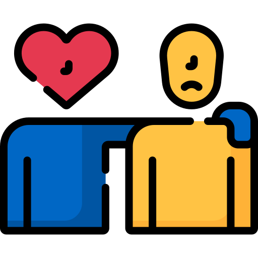
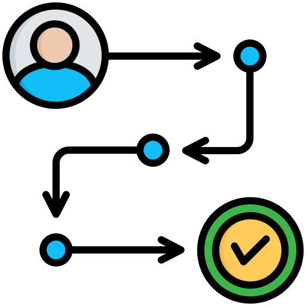
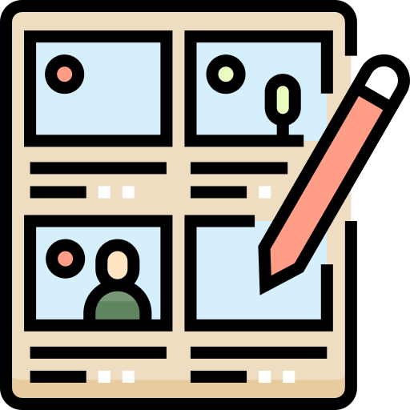
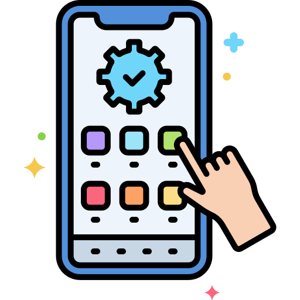

UX Methods I Use
Personas

Empathy Mapping

Journey Mapping

Storyboarding

Prototyping
Interviews
These are just some of the methods I apply when creating user-friendly experiences
Special shoutout to the creators of the icons I used: